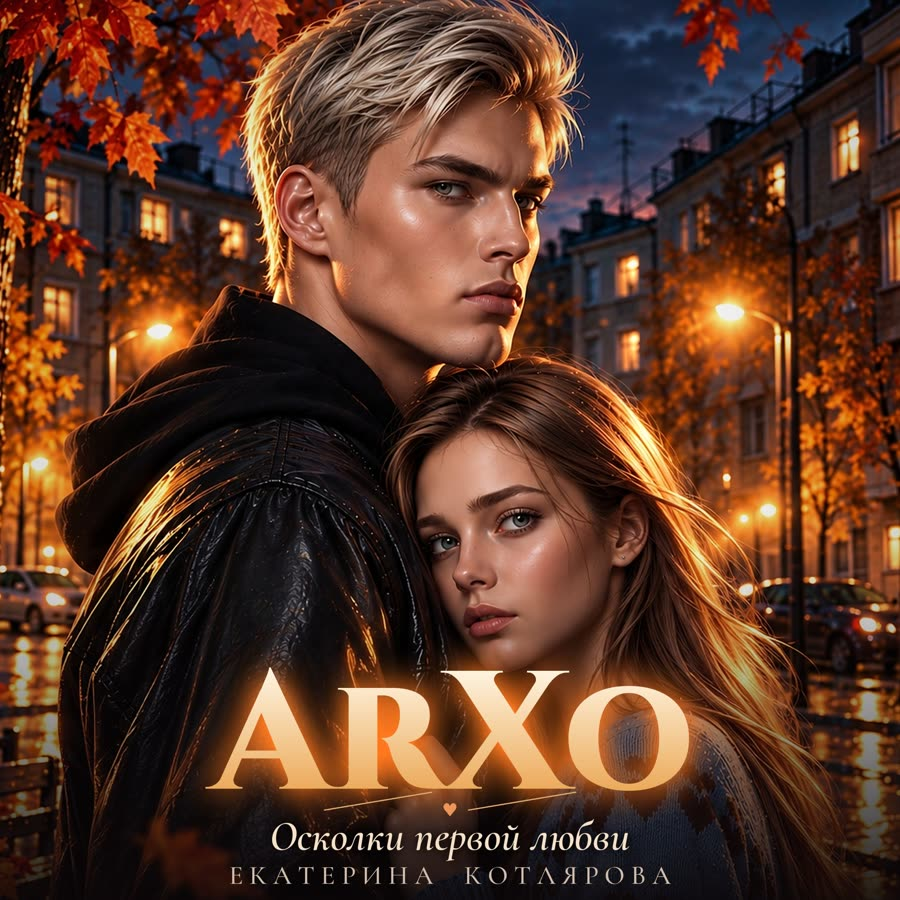

Песни Артура Холодова
ArXo
Артур не говорит о чувствах вслух. Он о них поёт. Альбом к книге «Осколки первой любви».

Трек 1
—
0:000:00
Артур не говорит о чувствах вслух. Он о них поёт. Альбом к книге «Осколки первой любви».
